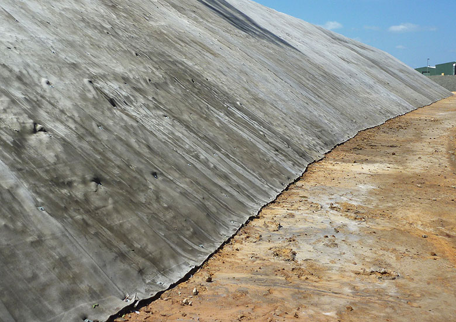
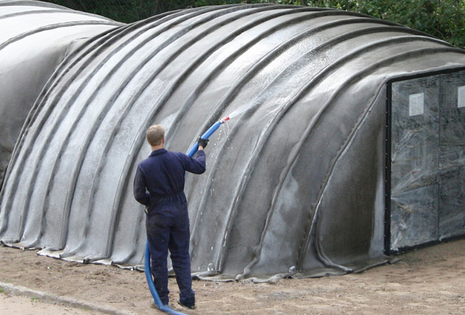
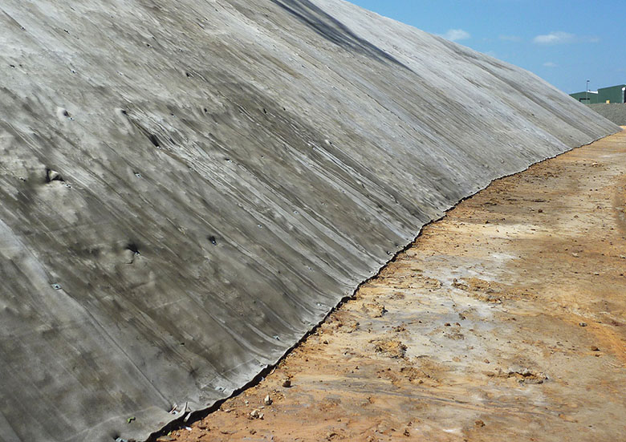
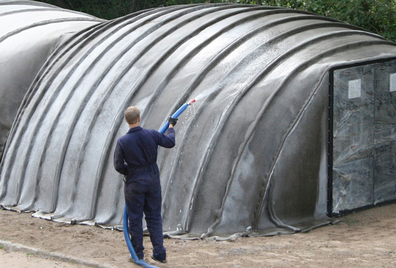
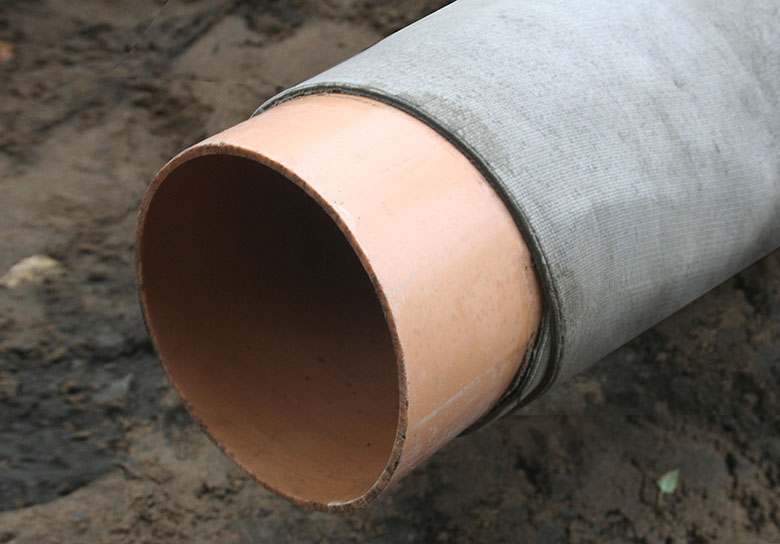
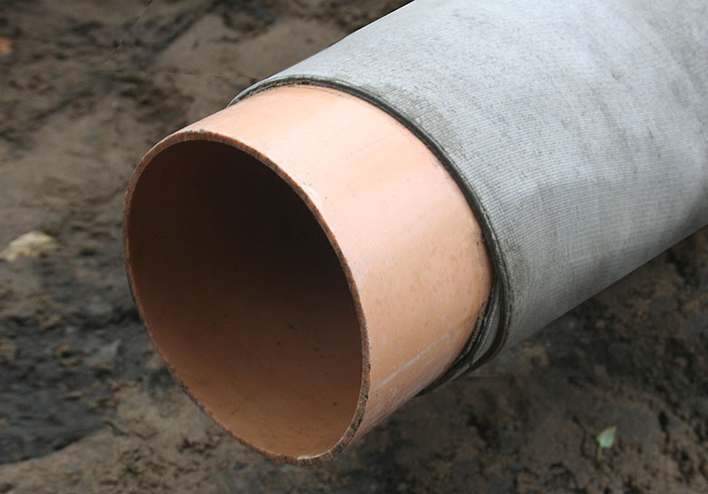

 



FAQ. Основное
-
Что такое бетонное полотно Concrete Canvas?
Это — новый, революционный вид строительного материала, геосинтетический цементный композитный настил (ГЦКН). Полотно представляет собой гибкую ткань с бетонной пропиткой, которая затвердевает после ее увлажнения. В результате образуется тонкий, прочный слой бетона, укрепленный волокнами ткани. По сути, это бетон в виде рулона. -
Для чего оно применяется?
Полотно Concrete Canvas, как правило, применяется вместо обычного бетона, преимущественно для защиты поверхности от разрушения, предотвращения эрозии. Типичные примеры его применения включают облицовку каналов, укрепление откосов, покрытие насыпи, работы по рекультивации земель, защиту канализационных выпусков, создание вентиляционных перемычек в шахтах, покрытие габионов и защиту трубопроводов от коррозии. Наибольшее применение бетонное полотно нашло в железнодорожной сфере, дорожном строительстве, горнодобывающей промышленности, нефтехимической промышленности и в аграрном секторе. -
В каком виде бетонное полотно поставляется?
Полотно Concrete Canvas поставляется в рулонах как большого, так и компактного размера. В первом случае для его транспортировки потребуется техника — например кран или экскаватор с траверсой, во втором — рулоны можно переносить вручную. Подробнее о видах полотна вы можете узнать в разделе «Спецификация». -
Как оно производится?
Бетонное полотно производится на заводе в Великобритании на оригинальном оборудовании, разработанном компанией Concrete Canvas Ltd. Оно позволяет вводить сухую тампонажную смесь в трехмерные матрицы из синтетического волокна с полихлорвиниловым покрытием c одной из сторон. -
В каких странах в настоящее время применяется полотно?
Бетонное полотно в настоящее время применяется примерно в 40 странах мира, а его экспорт составляет 65—85% от товарооборота компании. За пределами Великобритании крупнейшими рынками являются Бразилия, Чили, Россия, Австралия, Индонезия и страны Ближнего Востока. -
Какие компании уже использовали продукцию Concrete Canvas?
Если говорить о подрядчиках, то это: BAM Nuttall, Costain Group, Carillion, Balfour Beatty, Morgan Sindall, Trant, Enterprisemouchel, Morrison Construction, Skanska, AMCO, Murphy Group, Dyer & Butler, Amey Colas, J Breheny Contractors Ltd, а также Raymond Brown Ltd среди многих других.
Если говорить о заказчиках, то среди них такие крупные организации, как Network Rail, Highways Agency, The Environment Agency, Vale.
Кроме того, полотно применялось шестью из 10 ведущих нефтяных и газовых компаний мира.
-
Сколько стоит бетонное полотно Concrete Canvas?
Цена зависит от вида полотна, объема его поставки и места доставки. Свяжитесь со специалистами United Concrete Canvas Russia для получения точного расчета стоимости заказа.
Свойства
-
Какой уровень противопожарной защиты обеспечивает бетонное полотно?
Полотно Concrete Canvas получило классификацию Еврокласса B-s1, d0. Также оно прошло серьезные испытания на огнестойкость под контролем Управления США по охране труда и промышленной гигиене в горнодобывающей промышленности (MSHA). Эти испытания проводились, когда решался вопрос о возможности применения полотна в подземных рудниках.
-
Каков уровень химической стойкости полотна?
У него отличная устойчивость к химической коррозии, в частности, к разъеданию сернокислыми соединениями. Поэтому бетонное полотно вполне подходит для использования там, где проводятся работы по укладке дорожного покрытия.
Бетон, который используется для производства полотна, гораздо более устойчив к химическому воздействию, чем обычный бетон на портландцементе. Полотно прошло испытания на кислотность (ph4), щелочность (ph12.5), а также на погружение в углеводородную среду BS14414.
-
Каков уровень водонепроницаемости бетонного полотна?
В геотехнике уровень водонепроницаемости, который обеспечивают материалы, обычно определяется путем измерения через значение К (обращаем внимание, что в Великобритании используется своя система измерений и ГОСТов). Бетонное полотно прошло испытания по BS1377, которые показали, что его средняя величина К находится в диапазоне 10-8 и 10-9 м/с. Иными словами, она такая же, как и у глины. Если общий уровень водонепроницаемости имеет решающее значение для использования в определенных условиях, то вам необходимо тщательно рассмотреть метод стыковки бетонного полотна, которое вы планируете использовать.
-
Каков срок службы полотна при условии его правильной укладки?
В условиях климата, сходного с климатом Великобритании, расчетный срок эксплуатации бетонного полотна составляет более 50 лет.
Применение
-
Можно ли применять его для укрепления и стабилизации откосов?
Да, бетонное полотно все более широко используется для укрепления откосов, как альтернатива торкретированию. Оно хорошо защищает поверхность от разрушения под воздействием эрозии и погодных условий.
В некоторых случаях бетонное полотно может использоваться для структурной стабилизации откосов в сочетании со стальной сеткой и грунтовыми гвоздями. Но такой проект требует тщательной проработки.
-
Какая разница между укреплением и стабилизацией откосов и склонов?
Укрепление откосов выполняется на тех участках, где подвержена разрушению только их поверхность. При этом сам по себе откос устойчив. То есть с него может осыпаться порода, но сам он не обрушится. Обычно это характерно для скалистых поверхностей из песчаника, для откосов из смеси мелких пород и мелкого песка.
Стабилизация откосов выполняется там, где откосы отличаются неустойчивостью, где есть риск обрушения больших участков.
Традиционно эти проблемы решаются с помощью торкретирования, стальных сеток и грунтовых гвоздей. Сетки и гвозди в таких случаях обеспечивают армирование. Бетонное полотно может стать более удобной, надежной и экономичной альтернативой торкретированию. Однако в таких случаях его следует рассматривать как часть комплексного решения, разработанного квалифицированным геотехником.
-
Можно ли использовать бетонное полотно в качестве дорожного покрытия?
В большинстве случаев мы не рекомендуем использовать бетонное полотно для покрытия проезжей части. Однако его можно использовать в качестве жесткого армированного покрытия почвы с целью предотвращения эрозии и вымывания тонкозернистых сыпучих частиц. В этом случае мы рекомендуем укладывать полотно СС13. Отрезки полотна должны укладываться внахлест и скрепляться между собой винтами.
Хранение
-
Как следует хранить полотно перед его применением?
Бетонное полотно следует хранить в герметичных упаковках, в которых оно поставляется производителями. Место хранения должно быть сухим, крытым. Крайне нежелательно, чтобы на упаковки полотна попадали прямые солнечные лучи. -
Каков срок годности полотна после открытия упаковки?
После вскрытия герметичной упаковки бетонное полотно начинает утрачивать свои свойства. Поэтому, чтобы избежать заметного ухудшения его характеристик, полотно следует использовать в течение нескольких дней после вскрытия упаковки. Если упаковка была вскрыта случайно, то ее можно снова запечатать.
Укладка
-
Можно ли укладывать бетонное полотно в условиях высокой влажности?
Да, возможно. После того как бетонное полотно увлажнено, остается около 1—2 часов (показатели для климата Великобритании) на его монтаж. То есть его можно укладывать, например, под дождем. Но при этом график работ должен быть выстроен так, чтобы монтаж уложенных отрезков полотна не занимал более 1—2 часов.
Для получения более подробных рекомендаций и инструкций свяжитесь со специалистами United Concrete Canvas Russia.
-
Можно ли укладывать бетонное полотно при низких температурах?
Да, возможно. Но в таком случае для его увлажнения потребуется использовать теплую воду, а на уложенный и увлажненный материал накладывать полиэтиленовую пленку. Как правило, при укладке бетонного полотна следует соблюдать те же самые условия, что и при заливке обычного бетона.
Для получения более подробных рекомендаций и инструкций свяжитесь со специалистами United Concrete Canvas Russia.
-
Существуют ли специальные меры предосторожности при укладке бетонного полотна в очень жарких условиях?
Да, существуют. Рекомендуется укладывать его в сумерках, чтобы избежать испарения воды после увлажнения. В очень жарких условиях рекомендуется повторно смачивать материал с интервалом 2 часа на протяжении первых 8 часов.
Для получения более подробных рекомендаций и инструкций свяжитесь со специалистами United Concrete Canvas Russia.
-
Можно ли увеличить или, наоборот, сократить время укладки бетонного полотна?
Да, возможно. При достаточных объемах заказа Concrete Canvas Ltd. может увеличить или сократить время укладки бетонного полотна, с тем чтобы приспособиться к различным экологическим условиям и целям использования. -
Требуется ли какое-либо обслуживание полотна после его укладки?
При условии, что бетонное полотно уложено правильно, никакого его регулярного обслуживания в дальнейшем не потребуется. -
Как следует утилизировать или снимать бетонное полотно?
Полотно Concrete Canvas может быть снято при помощи стандартного оборудования для сноса строительных конструкций. Утилизируется оно таким же образом, как и обычные бетонные отходы. -
Возможно ли избыточно увлажнить бетонное полотно?
Нет, это полностью исключено. Поэтому его можно укладывать под проливным дождем и даже под водой. -
Что происходит, если бетонное полотно недостаточно увлажнено?
Оно не достигнет необходимой прочности, а его укладка может занять больше времени. -
Возможна ли укладка бетонного полотна под водой?
Да, возможна. В результате погружения полотно полностью увлажнится. -
Какой толщины бетонное полотно следует укладывать?
Это зависит от цели его применения. Производитель выпускает несколько видов полотна, отличающиеся толщиной и объемом (см. раздел «Спецификация»). Чтобы выбрать наиболее правильный вариант, проконсультируйтесь со специалистами United Concrete Canvas Russia. -
Какими способами отрезки бетонного полотна могут соединяться между собой?
Наиболее распространенными способами являются: 1) соединение внахлест с закреплением винтами; 2) соединение клеящим герметиком; 3) соединение раствором для заливки.
Существует целый ряд других механических и немеханических способов соединения. К ним относятся крепление кольями, стальной проволокой, тепловой сваркой, закатка (загибание края одного полотна под другое и фиксация стыка бетонной смесью с составом, аналогичным составу полотна), а также соединение скобами или гвоздями.
-
Какая вода должна использоваться для увлажнения бетонного полотна?
Его можно увлажнять как соленой, так и пресной водой. Нет необходимости в том, чтобы вода была питьевой. -
Сколько воды на квадратный метр следует использовать для увлажнения?
Исходите из следующего расчета: объем воды составляет ½ веса квадратного метра полотна. То есть если квадратный метр полотна весит 7 кг, то вам на него понадобится около 3,5 л воды. Но лучше «накинуть» еще 0,5—1 л. Поскольку бетонное полотно невозможно переувлажнить, рекомендуется некоторый избыток воды.
-
Существует ли максимальный наклон, при котором полотно может быть уложено?
Не существует. Его можно укладывать даже на вертикальных поверхностях. -
Через какие промежутки полотно должно крепиться кольями?
Это зависит от цели его применения и качества / наклона субстрата. За основу можно принять такой расчет: крепление кольями через каждые 2 метра и на стыках.
Для получения более подробных рекомендаций и инструкций свяжитесь со специалистами United Concrete Canvas Russia.
-
Можно ли укладывать полотно так, чтобы его ПВХ-поверхность оказалась сверху?
В большинстве случаев бетонное полотно должно укладываться волокнистой поверхностью наружу. В таком случае укрепленный волокнами ткани слой бетона будет защищать его ПВХ-изнанку от разрушения, например под воздействием ультрафиолетовых лучей. -
Можно ли использовать бетонное полотно без ПВХ-слоя?
ПВХ-слой является важной функциональной частью бетонного полотна, как с точки зрения сохранения его гидроизоляционных свойств, так и для предотвращения потерь воды при увлажнении. Мы не поставляем бетонное полотно без ПВХ-слоя.
-
Каким образом можно обрезать полотно?
Перед увлажнением полотно Concrete Canvas можно обрезать при помощи основных ручных инструментов. Рекомендуется использовать оснастку из одноразовых лезвий или портативные самозатачивающиеся дисковые фрезы с механическим приводом. После укладки бетонного полотна его можно обрезать при помощи угловых шлифмашин, лобзиков с керамическими лезвиями или плиткорезов хорошего качества. -
Какие меры безопасности следует принимать при работе с бетонным полотном?
Следует принимать общие меры защиты с помощью СИЗ. Так, при работе с полотном следует носить маски для лица, защитную одежду и перчатки. В бетонном полотне не содержатся измеримые количества растворимого хрома (VI), и оно не классифицируется как продукт, содержащий раздражающие вещества.
Варианты поставки
-
Выпускается ли бетонное полотно разного цвета?
Как правило, бетонное полотно поставляется в своем естественном цвете (крапчатый серый). Однако при необходимости его вполне можно покрасить самостоятельно, например фасадной краской хорошего качества. -
Есть ли в наличии полотно разной ширины?
Полотно Concrete Canvas имеет стандартную ширину 1,0 м для полотна CC5 и 1,1 м для CC8 и CC13. Существует возможность производства под заказ более узких рулонов. -
Можно ли заказать рулоны с длиной, отличной от стандартной?
Да, рулоны нестандартной длины могут поставляться под заказ. Но лишь при условии дополнительной оплаты поставляемых партий. -
Где можно купить расходные материалы для укладки полотна, в частности, крепеж?
Компания United Concrete Canvas Russia готова осуществить поставку всех сопутствующих расходных материалов, включая колья, заливку для цементирования стыков, обмазку и герметизирующую замазку. -
Можно ли получить образец вашей продукции?
Да, мы можем поставить как конечные образцы продукции, то есть затвердевшее полотно, так и образцы полотна разной толщины до увлажнения. Образцы имеют размер стандартного листка бумаги (А4).
Чтобы получить образцы, вам потребуется только сделать соответствующий запрос и оплатить почтовые расходы по их доставке. Мы вынуждены возложить почтовые расходы на вас из-за большого количества запросов на образцы.
Экологичность
-
Насколько бетонное полотно сопоставимо в экологическом плане с облицовкой каналов бетонным раствором?
Бетонное полотно обычно заменяет 100—150 мм наливного бетона, торкрет-бетона или сборного бетона. В результате этого, как правило, экономится 95% материалов. Это приводит к непосредственному уменьшению объема выброса углерода при строительных работах.
-
Получило ли бетонное полотно Concrete Canvas одобрение природоохранных государственных учреждений?
Полотно получило одобрение Агентства по охране окружающей среды (EA) Великобритании. В 2010 году оно было рекомендовано Группой по биологическому разнообразию EA к использованию для облицовки обводных каналов в городе Черч Виллидж. С тех пор было утверждено еще несколько проектов. Каждый из них рассматривался отдельно. -
Как вымывание бетонного полотна при его укладке влияет на уровень щелочности проточной воды?
Бетонное полотно имеет ограниченную резервную щелочность. Его использование сопровождается незначительной долей загрязнения. В отличие от большинства марок и видов бетона оно не классифицируется как раздражающее вещество.